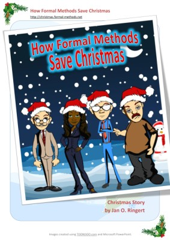

A Christmas story
- by Jan O. Ringert

Jan O. Ringert
What you will find here is a short story on How Formal Methods save Christmas. It is illustrated using toon characters for the tools/methods Alloy, FORMULA, SAT solver and SMV.
The code used as further illustration is available here.
Have fun reading (the document is linked to its cover picture on the right).
And above all, have a merry Christmas -- now that it has been saved this year -- and happy holidays,